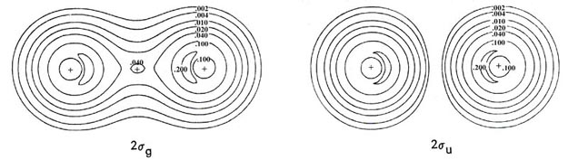
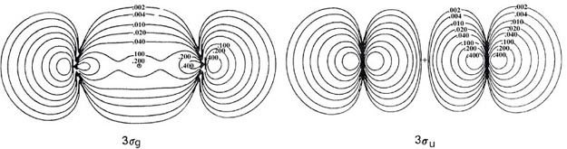
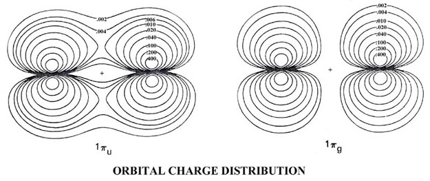

An Introduction to the Electronic Structure of Atoms and Molecules
Professor of Chemistry / McMaster University / Hamilton, Ontario
An Introduction to the Electronic Structure of Atoms and MoleculesProfessor of Chemistry / McMaster University / Hamilton, Ontario
|
| 1. | (a) | Give the molecular orbital electronic configurations of the N2 and Ne2 molecules. | ||
| (b) | Does the difference in the number of occupied bonding and anti-bonding orbitals agree with the number of electron pair bonds which a Lewis structure would predict for these two molecules? | |||
| 2. | Complete the correlation diagram (Fig. 8-4) for the homonuclear diatomic molecular orbitals by correlating each molecular orbital with an atomic orbital of the united atom. The symmetry and nodal property of each orbital must be conserved in the correlation. Starting with the molecular orbital of lowest energy each molecular orbital will in turn correlate with the atomic orbital of lowest energy which possesses the same symmetry. All atomic orbitals with even l values are of g symmetry and those with odd l values are of u symmetry. | |||
| 3. | The total and molecular orbital
charge distributions of the bifluoride ion (FHF)- are shown
in Fig. 8-12.
   Fig. 8-12. Contour maps of the total molecular charge distribution and the molecular orbital densities for the (FHF)- ion, which has the electronic configuration This negatively-charged molecule results from the reaction of a fluoride ion with a hydrogen fluoride molecule. The molecule has a linear, symmetric structure with the proton forming a bond between the fluorines. The molecular orbitals thus have the same symmetry classification (s or p and g or u) as do the orbitals for the homonuclear diatomic molecules. |
|||
| (a) | Give a qualitative comparison of the forms and binding properties of the molecular orbitals for (FHF)- with those for the homonuclear diatomic molecule F2. (The molecular orbitals for F2 are very similar to those shown in Fig. 8-8 for O2. The 3su orbital is not occupied in the ground state of F2.) The 1sg and 1su molecular orbital densities for (FHF)- are not illustrated since they, like the corresponding orbitals in the homonuclear diatomics, are simply inner shell 1s atomic-like distributions centred on the fluorine atom. | |||
| (b) | Account for the general forms and the primary atomic orbital components of the molecular orbitals in (FHF)- in terms of the simple LCAO approximation using symmetry properties and the relative energies of the orbitals on H and F. | |||
| 4. | The CO2 molecule is another linear symmetric triatomic molecule possessing the same symmetry properties as do the homonuclear diatomic molecules. The molecular orbitals will be of s or p and g or u symmetry. From a knowledge of the symmetries of the 1s, 2s and 2p atomic orbitals and their relative energies as given for C and O in Fig. 5-3 predict the electronic configuration of the CO2 molecule in terms of molecular orbitals. | |||
| 5. | The CO molecule is isoelectronic with the N2 molecule and can be thought of as being derived from N2 by transferring one proton from one N nucleus to the other. The molecular orbitals of CO will be of s or p symmetry but will not exhibit any g or u dependence since the centre of symmetry has been lost. Derive the electronic configuration of CO by considering how each molecular orbital of N2 will be changed as one N nuclear charge is increased by one unit and the other is decreased by one unit. As a hint, the 1sg orbital of N2 will become the 1s orbital of CO. Reference to Fig. 5-3 shows the 1s orbital of O to be considerably more stable than the 1s orbital of C. Thus the 1sg orbital of N2 which is concentrated equally in ls-like atomic orbitals on both N nuclei, becomes a 1s-like atomic orbital on O. Similarly the 1su orbital of N2 becomes a 1s-like orbital on C. | |||
| 6. | Using the 1s, 2s, 2ps and 2pp atomic orbitals on C and the 1s orbital on H discuss the simple LCAO forms expected for the molecular orbitals of the linear form of methylene, CH2. One can consider this problem from the point of view of how the molecular orbitals of CH given in the text would change if a second proton was brought up to the nonbonded side of the C atom. | |||
| 7. | Construct a correlation diagram for the HF molecule which relates the molecular orbitals with the orbitals of the separated atoms. Arrange the atomic orbitals of H and F on the right hand side of the diagram in order of increasing energy. The energies of the 1s, 2s, 3s, and 1p molecular orbitals in the HF molecule are -26.29 au, -1.60 au, -0.77 au and -0.65 au respectively. Is the energy of the 1s orbital on F much affected by the formation of the chemical bond with H? | |||
| 8. | Construct a correlation diagram for the CO molecule which relates the molecular orbitals with those of the separated atoms. Arrange the atomic orbitals of both C and O on the right hand side of the diagram in the order of increasing energy. Only atomic orbitals of the same symmetry can interact to form a molecular orbital and the resulting molecular orbital will have this same symmetry. The energies of the molecular orbitals in CO in au are 1s(-20.67), 2s(-11.37), 3s(-1.53) 4s(-0.81), 5s(-0.56), 1p(-0.65). Recall that the 2p atomic orbitals on C and O may form molecular orbitals of both s and p symmetry. | |||
| 9. | The correlation diagram in Problem
7 correlates the separated atom orbitals for R = ¥
with the molecular orbitals at Re, the
equilibrium internuclear distance in the molecule. Continue the correlation
of the orbitals to the limiting case of R = 0, the united atom. When the
distance between the F nucleus and the proton is decreased to zero the
result is a neon nucleus and a neon atom. The electronic energy of each
molecular orbital should correlate smoothly with an atomic energy level
of the united atom, the symmetry again being conserved. For example, the
1s molecular orbital will correlate with the
1s atomic orbital of the Ne atom.
Do the spacings between the energy levels for HF resemble those for the united or separated atoms more closely? That is, is the electronic structure of the HF best compared to that of the Ne atom or to that of perturbed energy levels of the F and H atoms? |
|||
 |
 |
 |
 |